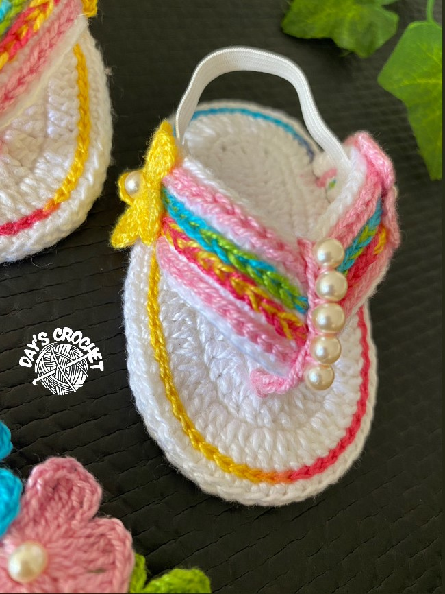
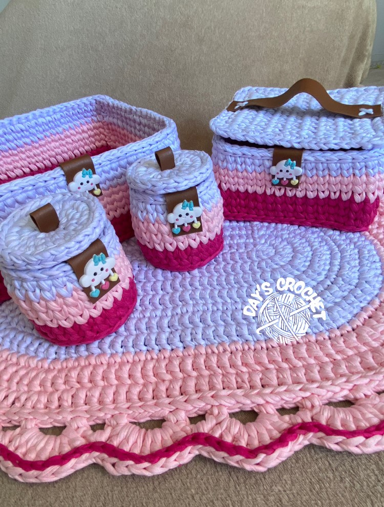
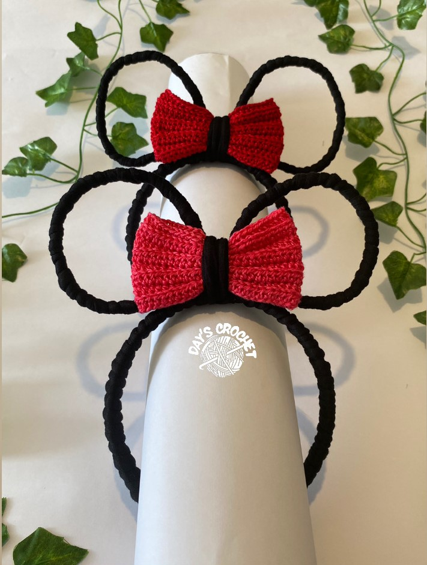

Sandália Baby
- Linha de algodão (Branca,Amarela, Rosa, Azul etc...)
- Elástico branco
- Agulha número 1.5mm de crochê
- Tesoura
- Sola de EVA
- Pérolas pequenas
Comece fazendo as correntinhas para a primeira camada da sola.(IMPORTANTE TODO PASSO A PASSO NA ASSINATURA DO PORTAL).
Kit Baby Menina
- Fios de Malha(Rosa Pink, Rosa Claro e Branco)
- Tiras em couro
- Nuvem emborrachada
- Agulha de crochê
- Tesoura e cola de silicone
Comece fazendo as correntinhas para o primeiro organizador.(IMPORTANTE TODO PASSO A PASSO NA ASSINATURA DO PORTAL)..
Tiara Minnie
- Tiara de Plástico
- Fio de malha (preto)
- linha em algodão (rosa ou vermelho)
- Cola de silicone líquida
- Agulha de crochê
Comece encapando a tiara com o fio de malha preto.(IMPORTANTE TODO PASSO A PASSO NA ASSINATURA DO PORTAL).